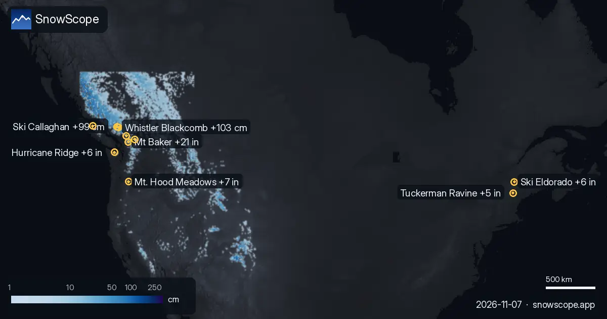

Where the most snow falls in the next 72 hours: Whistler Blackcomb +103 cm (7 November)
Our daily table of the resorts with the most new snow forecast for the next 24 hours and until 10 November, in Europe, Morocco and North America, with the snow line.

Europe and Morocco
Orcières Merlette (France): 0 cm in the next 24 hours and 36 cm in 72 hours, snow line about 2,500 m. Les Deux Alpes (France): 0 cm in the next 24 hours and 33 cm in 72 hours, snow line about 2,700 m. La Grave (France): 0 cm in the next 24 hours and 32 cm in 72 hours, snow line about 2,900 m.
| # | Resort | Region | +24 h | +72 h | Snow line |
|---|---|---|---|---|---|
| 1 | Orcières Merlette | Alps · France | 0 cm | 36 cm | 2,500 m |
| 2 | Les Deux Alpes | Alps · France | 0 cm | 33 cm | 2,700 m |
| 3 | La Grave | Alps · France | 0 cm | 32 cm | 2,900 m |
| 4 | Puy-Saint-Vincent | Alps · France | 0 cm | 30 cm | 2,500 m |
| 5 | Chaillol | Alps · France | 0 cm | 29 cm | 2,600 m |
| 6 | Alpe d'Huez Grand Domaine | Alps · France | 0 cm | 28 cm | 2,600 m |
| 7 | Domaine Alpin du Col d'Ornon | Alps · France | 0 cm | 28 cm | 2,600 m |
| 8 | Grindelwald | Alps · Switzerland | 0 cm | 27 cm | 2,700 m |
| # | Resort | Region | +24 h | +72 h | Snow line |
|---|---|---|---|---|---|
| 1 | Mt Baker | US West · United States | 11 in (29 cm) | 21 in (53 cm) | 5,900 ft (1,800 m) |
| 2 | Mt. Hood Meadows | US West · United States | 3 in (8 cm) | 7 in (18 cm) | 7,500 ft (2,300 m) |
| 3 | Hurricane Ridge | US West · United States | 5 in (12 cm) | 6 in (14 cm) | 6,600 ft (2,000 m) |
| 4 | Ski Eldorado | US Northeast · Canada | 3 in (7 cm) | 6 in (14 cm) | 6,900 ft (2,100 m) |
| 5 | Tuckerman Ravine | US Northeast · United States | 2 in (6 cm) | 5 in (13 cm) | – |
| 6 | Crystal Mountain | US West · United States | 2 in (5 cm) | 5 in (13 cm) | 6,600 ft (2,000 m) |
| 7 | Stevens Pass | US West · United States | 2 in (5 cm) | 5 in (12 cm) | 4,900 ft (1,500 m) |
| 8 | Sahalie Ski Club | US West · United States | 2 in (5 cm) | 4 in (11 cm) | 6,900 ft (2,100 m) |
| # | Resort | Region | +24 h | +72 h | Snow line |
|---|---|---|---|---|---|
| 1 | Whistler Blackcomb | Western Canada · Canada | 67 cm | 103 cm | 1,300 m |
| 2 | Ski Callaghan | Western Canada · Canada | 62 cm | 99 cm | 1,200 m |
| 3 | Mount Cain Alpine Park | Western Canada · Canada | 46 cm | 74 cm | 1,200 m |
| 4 | Sasquatch | Western Canada · Canada | 23 cm | 29 cm | 1,300 m |
| 5 | Manning Park Resort | Western Canada · Canada | 15 cm | 29 cm | 1,600 m |
| 6 | Tweedsmuir Ski Club | Western Canada · Canada | 19 cm | 26 cm | 1,100 m |
| 7 | Mount Washington Alpine Resort | Western Canada · Canada | 17 cm | 21 cm | 1,300 m |
| 8 | Grouse Mountain | Western Canada · Canada | 13 cm | 17 cm | 1,300 m |

United States
Mt Baker (United States): 11 in (29 cm) in the next 24 hours and 21 in (53 cm) in 72 hours, snow line about 5,900 ft (1,800 m). Mt. Hood Meadows (United States): 3 in (8 cm) in the next 24 hours and 7 in (18 cm) in 72 hours, snow line about 7,500 ft (2,300 m). Hurricane Ridge (United States): 5 in (12 cm) in the next 24 hours and 6 in (14 cm) in 72 hours, snow line about 6,600 ft (2,000 m).
Canada
Whistler Blackcomb (Canada): 67 cm in the next 24 hours and 103 cm in 72 hours, snow line about 1,300 m. Ski Callaghan (Canada): 62 cm in the next 24 hours and 99 cm in 72 hours, snow line about 1,200 m. Mount Cain Alpine Park (Canada): 46 cm in the next 24 hours and 74 cm in 72 hours, snow line about 1,200 m.
What is coming next
The snow line is about 300 m below the forecast freezing level: above it, the new snow should stay powdery; below it, expect wet snow or rain.
Resort numbers are model estimates for the upper slopes; station numbers are measurements at one point, on the date shown.
Forecasts a few days ahead can change: look at the map again the day before you travel.
Tips for skiers
- Fresh snow is best in the first hours after it stops: go early, before the sun and the crowds.
- Where the freezing level goes above the resort, plan for wet snow and use the highest lifts.
- Before you ski off-piste or go touring, read the official avalanche bulletin (links below).
- Snow on the map does not mean a resort is open: check lifts and opening dates on the resort's website.
- Get a powder alert in the SnowScope app to know when Whistler Blackcomb gets fresh snow.
About these numbers
Resort snow depths are the deepest snow on the resort's upper slopes from the SnowScope snow model (about 1 km, run of 6 November); they are estimates for an area, not a measurement at one point. Station values are measurements on the date shown. Forecasts can change. Always read the official avalanche bulletin before going off-piste.
Official avalanche bulletins: EAWS (Europe) · avalanche.org (US) · Avalanche Canada
More snow reports

Which resorts almost always have snow? We looked at 46 past winters (1980-81–2025-26) for every resort on our map and counted the days from 15 …

Mt Baker got 13 in (32 cm) of new snow in the last 72 hours, 1 in (3 cm) of it in the last 24 hours. It now has about 17 in (44 cm) on its upper …

We combined today's snow depth, the new snow of the last 72 hours and the forecast to pick Mount Cain Alpine Park, Whistler Blackcomb and Silver …